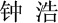

Dr. Hao Zhong
Dr. Hao Zhong

Associate Professor
Department of Computer Science and Engineering
Shanghai Jiao Tong University
I received my Ph.D degree from Peking University in 2009. My Ph.D dissertation was nominated for the distinguished Ph.D dissertation award of China Computer Federation. My PhD advisor is Prof. Hong Mei, and was co-advised by Prof. Lu Zhang and Prof. Tao Xie. After graduation, I joined Institute of Software, Chinese Academy of Sciences as an assistant professor, and was promoted as an associated professor in 2011. From 2012 to 2014, I was a visiting scholar with University of California, Davis, where I worked with Prof. Zhendong Su. In 2014, I joined Shanghai Jiao Tong University. I am a recipient of ACM SIGSOFT Distinguished Paper Award, the best paper award of ASE, and the best paper award of APSEC.
Please submit your high-quality research papers to SANER 2023 and ICSE 2023.
Prospective Master and PhD Students: Please contact me, if you are a self-motivated student with strong programming skills and interested in software engineering and its related research topics.
Research Interests
My research interests include empirical software engineering, software maintenance, and mining software engineering data, with emphasis on the following themes:
- Software evolution
- Code synchronization and migration:
- Commit and its analysis:
- Issue report
- Code authors:
- How do code authors hidden in commits? ICPC 2021.
- Fault
- Program repair:
- What are the potentials and challenges of program repair? ICSE 2015, EMSE 2018.
- How to learn StackOverflow for program repair? SANER 2018.
- How to reduce the complexity of program repair? JSS 2018.
- Fault localization:
- How to locate faults with knowledge graphs? ICPC 2021.
- Oracle and bug detection:
- Can we mine specifications from other sources such as API documents? ASE2009, ICSE 2012.
- Why is it so challenging to mine specifications? TSE 2018.
- What are the characteristics of specifications from different sources? ICSE 2020.
- How to detect real bugs with inferred bug signatures/specifications? ASE2009, TSE 2020.
- Concurrency bugs:
- Can we build a benchmark from real concurrency bugs? ASE 2015.
- Can we detect concurrency bugs inside APIs? ASE 2016.
- Documentation errors:
- How are documents maintained? FASE 2011.
- How to detect bugs in software engineering documents? OOPSLA 2013.
- Exception/Crash:
- Code recommendation
- SE for AI
A complete list is here.
Professional Activities and Service
- Program Committee (SE):
- ICSE 2016 SEIP, ICSE 2020, ICSE 2020 doctor symposium, ICSE 2023
- ESEC/FSE 2020
- OOPSLA 2017
- ASE 2018, ASE 2019, ASE 2021
- ICSME 2017, ICSME 2018, ICSME 2019
- SANER 2021
- ICPC 2022 Tool demo
- MSR 2019, MSR 2020, MSR 2021
- COMPSAC 2018, COMPSAC2019
- TASE 2015
- Program Committee (AI):
- (External) Reviewer: ICSE 2011, FSE 2015, ASE 2011, ASE 2010, ASE 2009, ASE 2008, ICSM 2011, ICSM 2009, ICSM 2006, ESEM 2011, QSIC 2009, Transaction on Software Engineering, Transaction on Software Engineering and Methodology, Software Testing Verification and Reliability, IEEE Software, Information and Software Technology, Science China Information Sciences, and Chinese Journal of Computers.
Chinese Version
{kind=link}
{kind=link}
{kind=link}